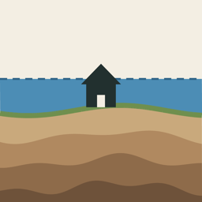

Tochi CheckFlood, landslide and terrain risk of a lot
Support
Last updated: October 14, 2026
FAQ
Does "None shown" mean it is safe?
No. It means the point is outside the mapped zones, or in an area where data is not yet available. It is not a guarantee of safety. Always check your municipality's hazard map.
Results do not load
Please try again with a good connection. Map data is fetched from public government servers.
How do I delete saved lots or destinations?
Swipe left on the item in the candidates list or in the destinations screen.
Does it show zoning or fire-prevention districts?
No. Please check your municipality's city-planning map.
Contact
jjayck.apps@gmail.com